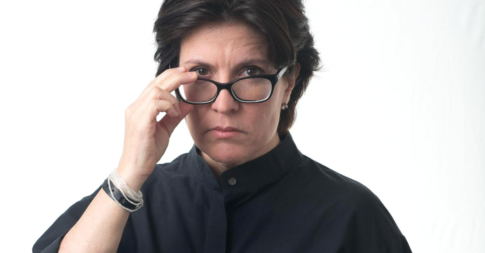

Why not Kara Swisher?


Following or unfollowing a journalist on Twitter means something, I have not waited for Natasha who reminded me of this while listening to Equitypod yesterday to act on it because way before I was a fan of these two great podcasts, Pivot and Sway where Kara switcher and her peer Scott Galloway provided me a lot of insights that allowed me to know more about what matters into the tech journalistic field.
For knowing more about this tech journalistic field, I did a bit of search that led me to rediscover the work of this great French sociologist Pierre Bourdieu to whom I was interested since I discovered this french journalist I was talking about in this article and this man is Pierre carle.
To say that these two paragraphs above show the importance of connections between people and why the tech mediated era we are living in now can be powerful at connecting people with other persons and ideas and social media platforms like Twitter, Facebook, clubhouse, LinkedIn, and their peers are surfing this wave. Just for saying a bit about myself let me tell you that from what I am hearing wave is doing a ruckus in my born country now.
The power of social links is that they are connecting us with other persons and ideas and we are benefiting from them since got the ability to communicate until knowing how languages are important for not socializing but also for understanding our cognitive system.
Journalists are those who ease the communication flow among us making more connections happen and you may already know what we get from these connections, simply more ideas and more solutions for us like what I have said in this article.
Kara Swisher is one of these journalists that connect us with the piece of information that matters to us. I thought that by whatever her personal life is made of she also really deserve some pieces of good words like Mbenda, Sarah Kunst, Alex and Natacha, Sam and Aidan, Kimberly Bryant, Deanna Kizis, Ramli John, all people of value like YOU who deserve good words and Seth Godin is true when he says that good writing is cheaper than special effects then why not be generous by using good words to write good things about others like Kara Swisher does because when we are empathic writing about other is simply writing about us. If you want great words from me as I did for them, I am open to know who you are and what you do and I am sure that you are actually doing amazing works like how the tech and creative people are doing right now.
PS: this seems to be the 21st text of the Greyio Heart experiment, from the last 20 we constated that 9 reached the expected result what makes the success rate of this experiment to 45%. Trying to estimate if it is worth executing the idea behind this experiment given this rate.